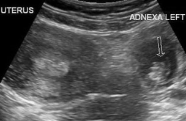
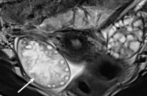
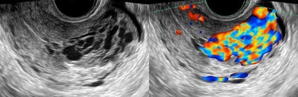
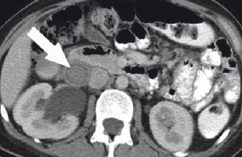

Urgences gynécologiques
- dl peviennes et métrorragies + utérus vide et hCG > 1500 UI/L
- 80% ampullaire > 10% isthmique > 5% cornuale ou ovarienne
- sac gestationnel intrautérin sans vésicule vitelline = GLI (< 5 SA ou pseudosac)
- sac gesta > 10 mm = vésicule / > 16 mm = embryon / embryon > 4 mm = act. <3

- dl pelvienne brutale intense + nausées
- médialisation ovaire + œdème stromal + tour de spire
- complique notamment kyste dermoïde et fibrome ovarien (tumeurs denses)
- IRM = 3 plans T2 ± T1 DIXON pré et post-gado

- curetage, après ttt d'une tumeur trophoblastique gestationnelle (15%)
- dilatations vasculaires dans le myomètre avec flux > 1 m/s et IR < 0,5
- IRM = flow voids hypoT2, PDC précoce, retour veineux précoce

- dl et fièvre post-partum
- IV- et veineux à 100s = veine ovarienne droite ++, VCI ?!
- ± utérus rétentionnel, urétérohydronéphrose, masse annexielle
